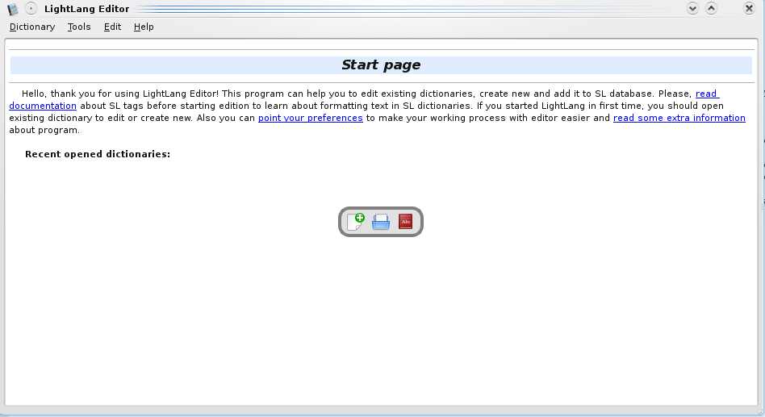
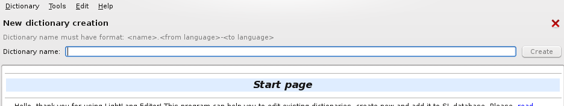
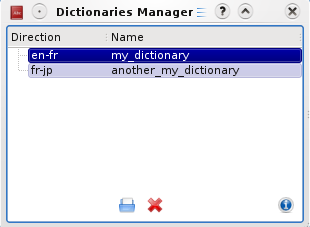
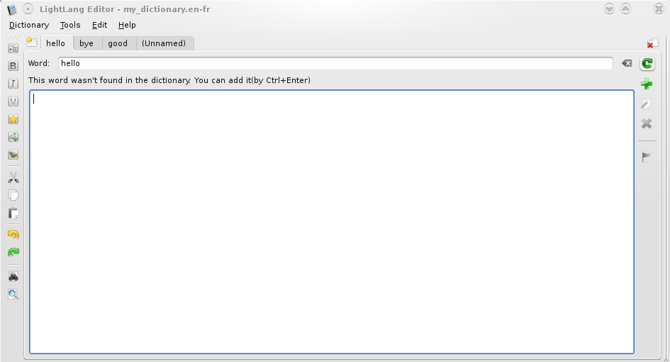
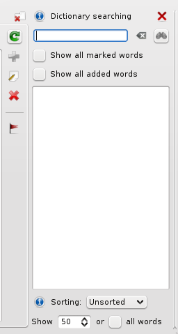
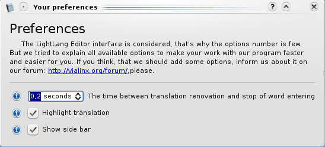

Почему сначала нужно загрузить словарь, а лишь потом редактировать
К сожалению, нам пришлось принять несколько решений, которые усложняют жизнь пользователя. Дело в том, что когда словарь имеет небольшое число слов: < 1000, проблем в поиске, добавлении и прочих манипуляциях не возникает, но если словарь имеет > 1000 слов процесс нахождения нужного слова затягивается и заставляет ждать пользователя, причём довольно долго. Поэтому мы пришли к выводу, что лучше использовать базы данных для манипуляций со словами словаря, так как это куда быстрее, чем использовать обычный текстовый файл. Из-за этого Вам, уважаемый пользователь, нужно сначало загрузить словарь, а только потом его можно будет редактировать. Чтобы перевести словарь из формата "база данных" вам нужно лишь выбрать в меню "Словарь" пункт "Сохранить словарь как". Словарь сохранится в текстовый файл с форматом SL. Когда Вы создаёте новый словарь, он создаётся в формате "База данных", поэтому Вы можете сразу его редактировать.
Если у Вас есть какие-то вопросы, то не стесняйтесь и пишите на электронный адрес разработчика(sstikhonov@gmail.com).
Описание элементов интерфейса
1. Стартовая страница: Если Вы запустили програмум в первый раз, то Вы увидете вот это:

Это стартовая страница, на которой Вы можете увидеть список ранее открытых словарей и панель быстрого доступа к функциям. На панеле можно найти следующие функции: создание словаря, открытие и загрузка словаря из файла и открытие окна "Управление загруженными словарями".
2. Создание словаря: Чтобы создать новый словарь, Вам необходимо будет пройти через этот диалог:

В нём Вам нужно будет написать имя словаря. Причём формат словаря должен быть строго соблюдён: <имя>.<с какого языка переводите>-<на какой язык переводите>. Цвет кнопки "Создать" будет оповещать Вас о правильности ввода: если красный, то формат неверен, а если зелёный, то создание словаря с введённым именем возможно.
3. Управление словарями: Управление уже загруженными словарями осуществляется через этот диалог:

В нём Вы можете увидеть список уже загруженных словарей и три кнопки снизу. Первая кнопка позволяет открыть этот словарь и перейти к его редактированию. С помощью второй кнопки с крестиком Вы можете удалить словарь. А третья кнопки с вопросом: покажет Вам дополнительную информацию.
4. Процесс редактирования словаря: Добавлять, удалять и редактировать слова возможно благодаря этому интерфейсу:

Слева располагается панель инструментов, которая содержит: вставка тегов, отмена и повтор действий, поиск в переводе и преворительный просмотр. Вы можете открывать несколько вкладок для редактирования сразу нескольких слов. Что же означают все кнопки, которые находятся правее поля для перевода? А означают они следующее(сверху вниз). Первая кнопки позволяет обновить перевод. Кнопка с плюсом поможет Вам добавить слово в словарь. Благодаря следующей кнопки Вы можете изменить перевод уже существующего слова. Кнопка с крестиком удаляет слово из словаря. Кнопка с флажком помечает это слово. Подробнее о метках читайте ниже.
5. Поиск по словарю: Для более быстрой навигации между добавленными словами мы создали панель "Поиск по словарю":

Эта панель показывает слова из словаря, которые начинаются со строки, которую Вы можете ввести. Учитывая то, что в словаре таких слов может быть очень и очень много, мы добавили возможность ограничение вывода таких слов(нижняя строка), однако это ограничение можно убрать на той же строке. В остальном же здесь всё понятно.
6. Предпочтения: Чтобы сделать Вашу работу более удобной Вы можете изменить несколько опций в этом диалоге:

Мы решили добавить всего-то три опции. Подробнее о каждой из них Вы можете прочитать, если нажметё на кнопки с вопросом. Интерфейс этого диалога очень простой, поэтому объяснять здесь нечего.
Использование меток
Метки позволяют облегчить процесс перевода. Вы можете использовать их для разных целей. Вот лишь несколько из них, которые пришли к нам в голову:
- Если Вы вдруг не закончили перевод какого-то слова, то Вы можете его пометить и быстро вернуться к нему, благодаря панеле поиска по словарю, выбрав там соответствующую галочку "Показать все помеченные слова"
- Если Вы сторонник планирования и запланировали перевести за один день, например, 50 слов, то Вы можете сначало добавить эти 50 слов, пометить их, а затем переходя поочереди к каждому слову писать к ним перевод
- Ваш вариант...